微信公众号[深容Pubmed文献检索] 1. 此处右键：选菜单【翻成中文（简体）】 2. 翻译后，此处右键：选菜单【打印...】成PDF格式
建议屏幕分辨率：1920X1080；如果屏幕太小，可以按Ctrl + 或 Ctrl -缩放网页。

Software Construction
Chapter 2: Process and Tools of Software
Construction
2.2 Process, Systems, and Tools of
Software Construction
Xu Hanchuan
xhc@hit.edu.cn
March 5, 2019

Outline
2.2 Process, Systems, and Tools of Software Construction
▪ General process of software construction: Design Programming
/refactoring Debugging Testing Build Release
– Programming / refactoring
– Review and static code analysis
– Debugging (dumping and logging) and Testing
– Dynamic code analysis /profiling
▪ Narrow-sense process of software construction (Build): Validate
Compile Link Test Package Install Deploy
– Build system: components and process
– Build variants and build language
– Build tools: Make, Ant, Maven, Gradle, Eclipse
▪ Summary

2.2 Process, Systems, and Tools of Software Construction
Objective of this lecture
▪ Get to know the general process of software construction (Design
Programming Debug Testing Build Release)
▪ Use Eclipse IDE as Java construction environment and tools
▪ Get to know typical tools for review and static analysis, debug
(dumping, logging) and testing, and dynamic analysis / profiling
▪ Learn the narrow-sense process of software construction (Build:
Validate Compile Link Test Package Install
Deploy)
▪ Use one of build tools (make, Ant, Maven, Gradle, Eclipse IDE) to
build your own Java projects.

Software Construction
1 General process of software
construction

2.2 Process, Systems, and Tools of Software Construction
General process of software construction
Validate
Compile
Link
Test
Package
Install
Deploy
Programming
(coding)
Build
Debugging
Refactoring
Testing
Code review
Static code analysis
Dynamic code
analysis /profiling

Software Construction
(1) Programming


2.2 Process, Systems, and Tools of Software Construction
Construction languages
▪ Programming languages (e.g., C, C++, Java, Python)
▪ Modeling languages (e.g., UML)
▪ Configuration languages (e.g., XML)
▪ Linguistic-based
▪ Mathematics-based (formal)
▪ Graphics-based (visual)

2.2 Process, Systems, and Tools of Software Construction
(1) Programming Languages
2.2 Process, Systems, and Tools of Software Construction

2.2 Process, Systems, and Tools of Software Construction
Programming tools
▪ Integrated development environment (IDE): comprehensive
facilities to programmers for software development.
▪ An IDE normally consists of:
– Source code editor with intelligent code completion, code refactoring tool
– File management tool
– Library management tool
– Class browser, object browser, class hierarchy diagram for OOP
– Graphical User Interface (GUI) builder
– Compiler, interpreter
– Build automation tools
– Version control system
–…
▪ IDE should be extensible by more external third-party tools.
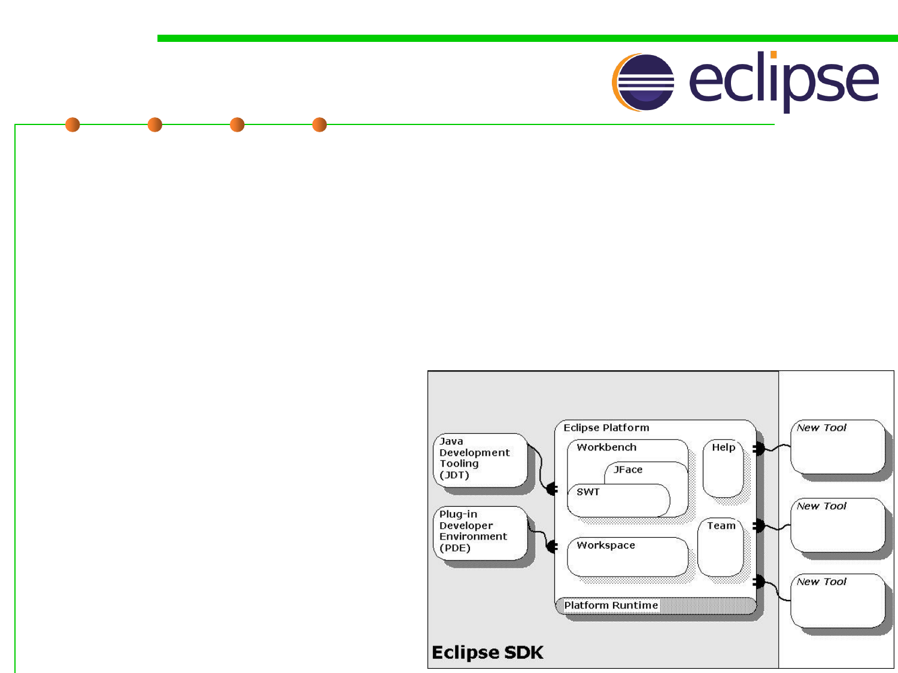
2.2 Process, Systems, and Tools of Software Construction
Eclipse as an IDE example
▪ Eclipse IDE: an open source IDE for Java, but not limited to,
C/C++, PHP, Python, etc, started as a proprietary IBM product
(Visual age for Smalltalk/Java)
– It contains a base workspace with tools for coding, building, running and
debugging applications, and an extensible plug-in system for
customizing the environment.
– Plug-ins(插件) are structured bundles of code and/or data that contribute
functionality to the system.
Functionality can be contributed
in the form of code libraries,
platform extensions, or even
documentation.
– Plug-ins can define extension
points, well-defined places
where other plug-ins can add
functionality.

2.2 Process, Systems, and Tools of Software Construction
Eclipse IDE Components
Menu bars
Full drop down menus plus quick
access to common functions
Perspective Switcher
We can switch between
various perspectives
here
Task List Pane
This contains a list of
“tasks” to complete
Package Explorer Pane
This is where our
projects/files are listed
Editor Pane
This is where we edit
our source code
Miscellaneous Pane
Various components can appear in this
pane – typically this contains a console
and a list of compiler problems
Outline Pane
This contains a hierarchical
view of a source file


2.2 Process, Systems, and Tools of Software Construction
Core components of Eclipse IDE
▪ Runtime core
– The platform runtime core implements the runtime engine that starts the
platform base and dynamically discovers and runs plug-ins. (运行时内核
可启动基础功能、动态发现和运行插件)
– A plug-in is a structured component that describes itself to the system
using an OSGi manifest (MANIFEST.MF) file(OSGi是Java动态化模块化系
统的一系列规范) and a plug-in manifest (plugin.xml) file. The platform
maintains a registry of installed plug-ins and the functionality they
provide. Eclipse的插件采用OSGi规范描述自身，Eclipse platform 维护插件
及其功能的注册表
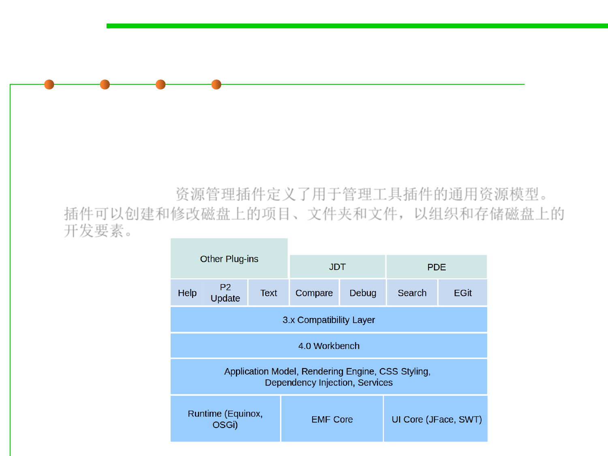
2.2 Process, Systems, and Tools of Software Construction
Core components of Eclipse IDE
▪ Resource management
– The resource management plug-in defines a common resource model for
managing the artifacts of tool plug-ins. Plug-ins can create and modify
projects, folders, and files for organizing and storing development
artifacts on disk.资源管理插件定义了用于管理工具插件的通用资源模型。
插件可以创建和修改磁盘上的项目、文件夹和文件，以组织和存储磁盘上的
开发要素。
–

2.2 Process, Systems, and Tools of Software Construction
Core components of Eclipse IDE
▪ Workbench UI Core
http://help.eclipse.org/oxygen/index.jsp
– This plug-in implements the workbench UI and defines a number of
extension points that allow other plug-ins to contribute menu and toolbar
actions, drag and drop operations, dialogs, wizards, and custom views
and editors. Workbench UI 定义了许多扩展点，允许其他插件提供UI功能
– Standard Widget(窗口小部件) Toolkit (SWT) and JFace framework
▪ Java development tools (JDT)
– It extend platform workbench
by providing features for editing,
viewing, compiling, debugging,
and running Java code.
▪ Plug-in Dev. Env. (PDE)
– Tools that automate creation,
manipulation, debugging, and
deploying of plug-ins.
2.2 Process, Systems, and Tools of Software Construction
Eclipse architecture

2.2 Process, Systems, and Tools of Software Construction
(2) Modeling languages and tools
http://modeling-languages.com
▪ A modeling language is any artificial language that can be used to
express information or knowledge or systems in a structure that is
defined by a consistent set of rules, with the objective of visualizing,
reasoning, verifying and communicating the design of a system.建
模语言是一种人工语言，用于表达信息、知识或系统，以一套一致的
规则定义来可视化、推理、验证和交流系统的设计。
2.2 Process, Systems, and Tools of Software Construction
UML as a modeling language and tool example
▪ UML: Unified Modeling Language
to learn UML in “Software Process and Tools” in the 3rd year
2.2 Process, Systems, and Tools of Software Construction
UML as a modeling language and tool example
▪ UML Use Case Diagram
2.2 Process, Systems, and Tools of Software Construction
UML as a modeling language and tool example
▪ UML Class Diagram
2.2 Process, Systems, and Tools of Software Construction
UML as a modeling language and tool example
▪ UML Sequence Diagram
2.2 Process, Systems, and Tools of Software Construction
UML as a modeling language and tool example
▪ UML Component Diagram
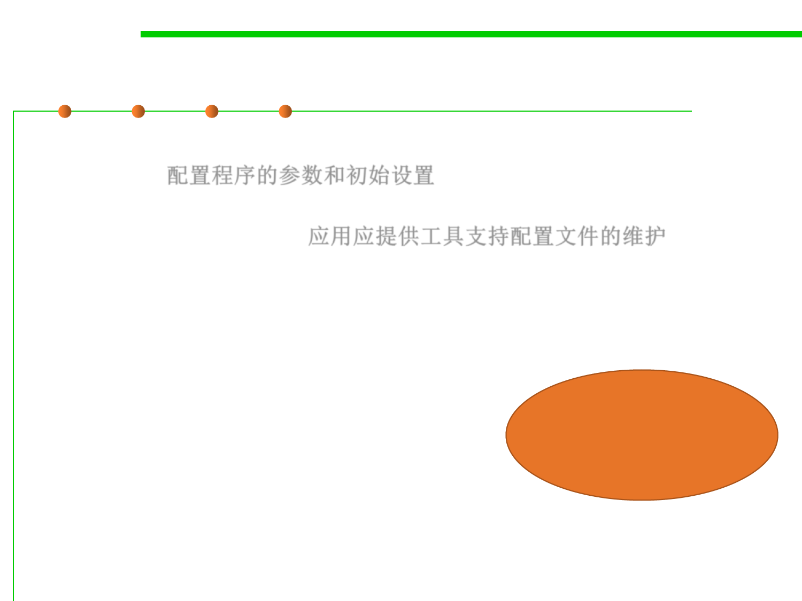 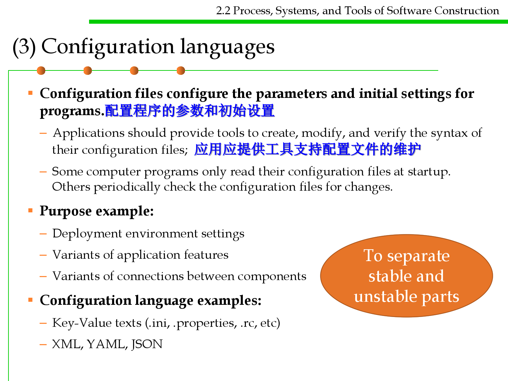
2.2 Process, Systems, and Tools of Software Construction
(3) Configuration languages
▪ Configuration files configure the parameters and initial settings for
programs.配置程序的参数和初始设置
– Applications should provide tools to create, modify, and verify the syntax of
their configuration files; 应用应提供工具支持配置文件的维护
– Some computer programs only read their configuration files at startup.
Others periodically check the configuration files for changes.
▪ Purpose example:
– Deployment environment settings
– Variants of application features
– Variants of connections between components
▪ Configuration language examples:
To separate
stable and
unstable parts
– Key-Value texts (.ini, .properties, .rc, etc)
– XML, YAML, JSON
2.2 Process, Systems, and Tools of Software Construction
Configuration languages

Software Construction
(2) Review and static code analysis

2.2 Process, Systems, and Tools of Software Construction
Review and static analysis/checking
▪ Code review is systematic examination (peer review) of source code.
– It is intended to find mistakes overlooked in the initial development phase,
improving the overall quality of software.
– Reviews are done in various forms such as pair programming, informal
walkthroughs(走查), and formal inspections.
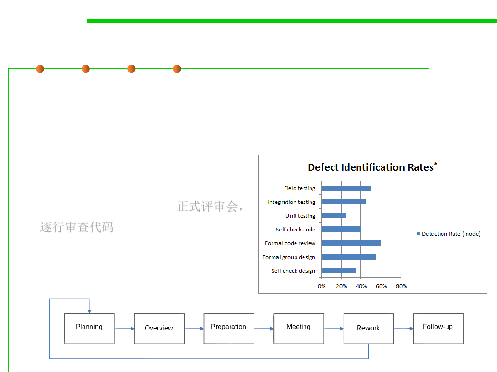
2.2 Process, Systems, and Tools of Software Construction
Formal code review
▪ Formal code review, such as a Fagan inspection(一种结构化的检查
代码和文档缺陷的过程), involves a careful and detailed process
with multiple participants and multiple phases.
– Formal code reviews are the traditional method of review, in
which software developers attend a
series of meetings and review code
line by line, usually using printed
copies of the material. 正式评审会，
逐行审查代码
– Formal inspections are extremely
thorough and have been proven
effective at finding defects in the
code under review.

2.2 Process, Systems, and Tools of Software Construction
Lightweight code review
▪ Lightweight code review typically requires less overhead than
formal code inspections, though it can be equally effective when
done properly.
▪ Lightweight reviews are often conducted as part of the normal
development process:
– Over-the-shoulder – one developer looks over the author‘s shoulder as the
latter walks through the code. 一起审查代码
– Email pass-around – source code management system emails code to
reviewers automatically after check-in is made. 代码检入后邮件通知审查
– Pair programming – two authors develop code together at the same
workstation, as it is common in Extreme Programming.
– Tool-assisted code review – authors and reviewers use software tools,
informal ones such as pastebins and IRC, or specialized tools designed for
peer code review.

2.2 Process, Systems, and Tools of Software Construction
Static code analysis
▪ Static code analysis is the analysis of computer software that is
performed without actually executing programs (analysis
performed on executing programs is known as dynamic analysis).
▪ The process provides an understanding of the code structure, and
can help to ensure that the code adheres to industry standards.
▪ Automated tools can assist programmers and developers in
carrying out static analysis.
– e.g., CheckStyle, FindBugs, PMD for Java


Software Construction
(3) Dynamic code analysis / profiling

2.2 Process, Systems, and Tools of Software Construction
Dynamic code analysis / profiling
▪ Dynamic program analysis is the analysis of software that is
performed by executing programs. 运行程序以分析代码
▪ The target program must be executed with sufficient test inputs to
produce interesting behavior. 程序需要经过充分的测试
▪ Use of software testing measures such as code coverage helps
ensure that an adequate slice of the program‘s set of possible
behaviors has been observed. 利用测试度量技术（如覆盖率）确保
代码的可能功能均被充分测试到
▪ Profiling (“program profiling”, “software profiling”) is a form of
dynamic program analysis that measures the space (memory) or
time complexity of a program, the usage of particular instructions,
or the frequency and duration of function calls. Profiling 用来测量
程序的时空复杂度，特定指令或函数的调用频率或持续时间
2.2 Process, Systems, and Tools of Software Construction
Dynamic code analysis / profiling

Software Construction
(4) Debugging and Testing
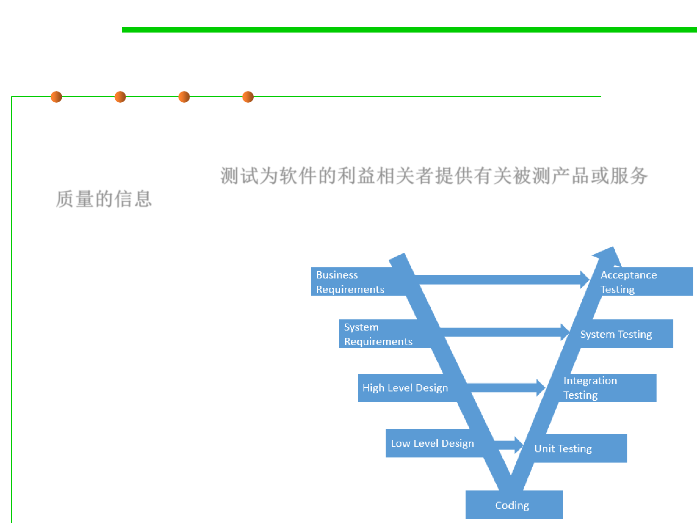 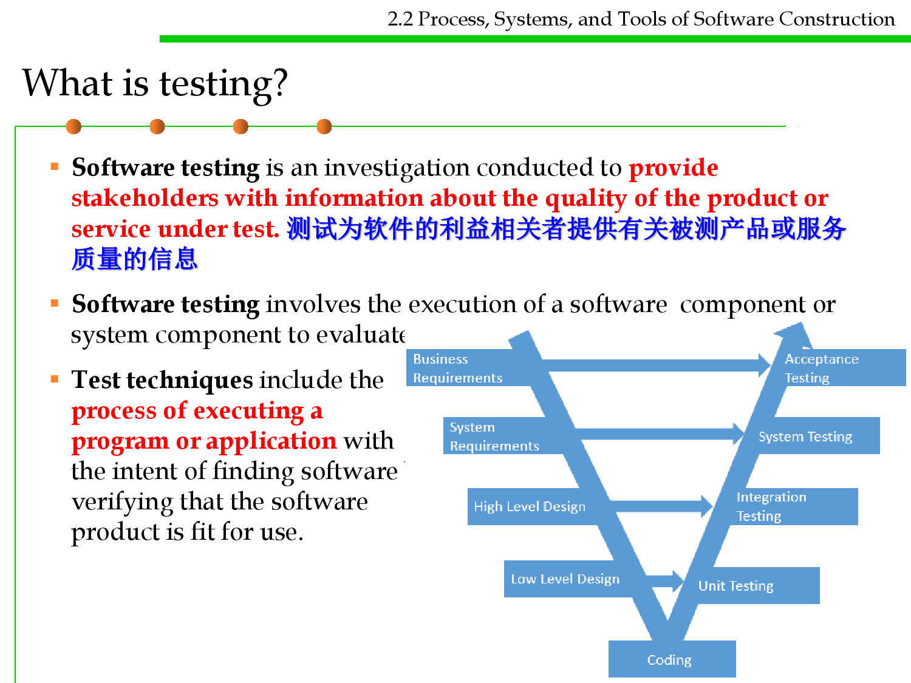
What is testing?
2.2 Process, Systems, and Tools of Software Construction
▪ Software testing is an investigation conducted to provide
stakeholders with information about the quality of the product or
service under test. 测试为软件的利益相关者提供有关被测产品或服务
质量的信息
▪ Software testing involves the execution of a software component or
system component to evaluate one or more properties of interest.
▪ Test techniques include the
process of executing a
program or application with
the intent of finding software bugs (errors or other defects), and
verifying that the software
product is fit for use.
2.2 Process, Systems, and Tools of Software Construction
What is Debugging?
▪ Debugging is the process of identifying the root cause of an error
and correcting it.调试是识别错误的根本原因并对其进行纠正的过程
▪ It contrasts with testing, which is the process of detecting the error
initially, debugging occurs as a consequence of successful testing.(
调试往往是成功测试的后续环节，成功测试不意味着没有发现错误，
反而相反)
– On some projects, debugging occupies as much as 50% of the total
development time.
– For many programmers, debugging is the hardest part of programming.

2.2 Process, Systems, and Tools of Software Construction
What is Debugging?
▪ Like testing, debugging isn’t a way to improve the quality of your
software, but it’s a way to diagnose defects. 测试和调试不会提升软
件质量，而是发现缺陷的主要手段
– Software quality must be built in from the start. The best way to build a
quality product is to develop requirements carefully, design well, and use
high-quality coding practices. 软件质量应通过认真的分析需求、良好
的设计、高质量的编码来确保。
– Debugging is a last resort. 调试是最后的手段
2.2 Process, Systems, and Tools of Software Construction
Debug perspective in Eclipse
These buttons allow you
to step through the code
Note new Debug
perspective – click Java to
return to normal
List of breakpoints
Variables in scope are listed here along
with their current values (by right
clicking you can change values of
variables as you program is running)
This pane shows the current
line of code we broke on
Current high level location
(class and method)
Output console, just like
in normal run mode

Software Construction
(5) Refactoring

Refactoring(重构)
2.2 Process, Systems, and Tools of Software Construction
▪ Refactoring is the process of changing a software system in such a way
that it does not alter the external behavior of the code yet improves its
internal structure. 重构是在不改变代码外部行为的前提下，改善其内部结
构。
– Incurs a short-term time/work cost to reap long-term benefits, and a long-term
investment in the overall quality of your system.
▪ Refactoring is:
– restructuring (rearranging) code...
– ...in a series of small, semantics-preserving transformations (i.e. the code keeps
working)...
– ...in order to make the code easier to maintain and modify
▪ Refactoring is not just any old restructuring
– You need to keep the code working
– You need small steps that preserve semantics
– You need to have unit tests to prove the code works 通过单元测试确保代可工作
Refactoring
2.2 Process, Systems, and Tools of Software Construction

Software Construction
2 Narrow-sense process of software
construction (Build)

Software Construction
(1) Build System
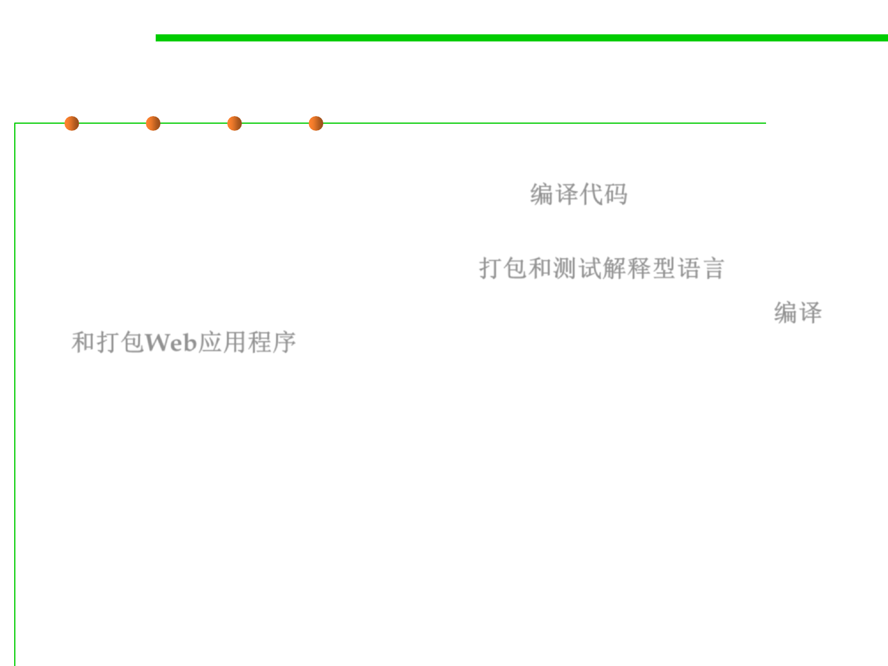 
2.2 Process, Systems, and Tools of Software Construction
Typical BUILD scenarios
▪ 1. The compilation of software written in traditional compiled
languages, such as C, C++, Java and C#. 编译代码
▪ 2. The packaging and testing of software written in interpreted
languages such as Perl and Python. 打包和测试解释型语言
▪ 3. The compilation and packaging of web-based applications. 编译
和打包Web应用程序
– These include static HTML pages, source code written in Java or C#,
hybrid files written using JSP (JavaServer Pages), ASP (Active Server
Pages), or PHP (Hypertext Preprocessor) syntax, along with numerous
types of configuration file.

2.2 Process, Systems, and Tools of Software Construction
Typical BUILD scenarios
▪ 4. The execution of unit tests to validate small portions of the
software in isolation from the rest of the code. 执行单元测试
▪ 5. The execution of static analysis tools to identify bugs in a
program’s source code. The output from this build system is a bug
report document rather than an executable program. 进行静态分析
，得到bug 报告
▪ 6. The generation of PDF or HTML documentation. This type of
build system consumes input files in a range of different formats
but generates human-readable documentation as the output. 输入
不同格式的输入文件，得到人可读的文档

2.2 Process, Systems, and Tools of Software Construction
Compiled Languages
▪ Compiled languages such as C, C++, Java, and C#. In this model,
source files are compiled into object files, which are then linked
into code libraries or executable programs. 编译后得到目标文件，
后续被链接入类库或者可执行程序中
▪ The resulting files are collected into a release package that can be
installed on a target machine. 最终得到可部署到目标机器的发布包

2.2 Process, Systems, and Tools of Software Construction
Compiled Languages
▪ Version-control tool
▪ Source trees and object trees: The set of source files and compiled
object files that a particular developer works with.
▪ Compilation tools: The tools that take input files and generate
output files (for example, converting source code files into object
code and executable programs). Common examples of compilation
tools include a C or Java compiler, but they also include
documentation and unit test generators.
▪ Build machines: The computing equipment on which the
compilation tools are executed.
▪ Release packaging and target machines: The method by which the
software is packaged, distributed to end users, and then installed on
the target machine.
2.2 Process, Systems, and Tools of Software Construction
Interpreted Languages
▪ Interpreted source code isn’t compiled into object code, so there’s no
need for an object tree. The source files themselves are collected into
a release package, ready to be installed on the target machine.
▪ Compilation tools focus on transforming source files and storing
them in the release package.
▪ Compilation into machine code is not performed at build time, even
though it may happen at runtime.
2.2 Process, Systems, and Tools of Software Construction
Web-Based Applications
▪ The build system for a web-based application is a mix of compiled
code, interpreted code, and configuration or data files. As Figure 1.3
shows, some files (such as HTML files) are copied directly from the
source tree to the release package, whereas others (such as Java
source files) are first compiled into object code.

2.2 Process, Systems, and Tools of Software Construction
Web-Based Applications
▪ Static HTML files, containing nothing more than marked-up data
to be displayed in a web browser. These files are copied directly to
the release package.
▪ JavaScript files containing code to be interpreted by an end user’s
web browser. These files are also copied directly to the release
package.
▪ JSP, ASP, or PHP pages, containing a mix of HTML and program
code. These files are compiled and executed by the web application
server rather than by the build system. These files are also copied
to the release package, ready for installation on the web server.
▪ Java source files to be compiled into object code and packaged as
part of the web application. The build system performs this
transformation before packaging the Java class files. The Java
classes are executed on the web application server or even within
the web browser (using a Java applet).

2.2 Process, Systems, and Tools of Software Construction
Unit Testing, Static Analysis, etc

Software Construction
(2) Components of a Build System

2.2 Process, Systems, and Tools of Software Construction
Components of a Build System
▪ Version-Control Tools
▪ Source Tree: a program’s source code is stored as a number of disk
files. This arrangement of the files into different is known as the
source tree. The structure of the source tree often reflects the
architecture of the software.
▪ Object Trees: a separate tree hierarchy that stores any object files or
executable programs constructed by the build process.
▪ Compilation Tools: a program that translate the human-readable
source files into the machine-readable executable program files.
– Compiler: source files object files
– Linker: multiple related object files executable program image
– UML-based code generator: models source code files
– Documentation generator: scripts documents
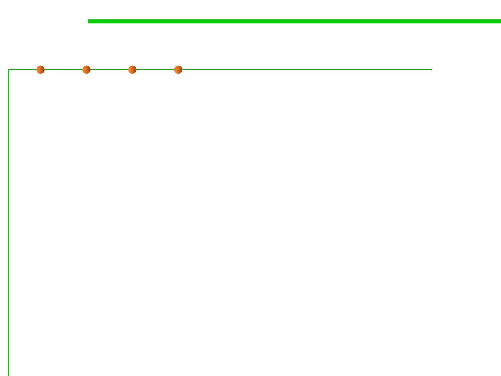
2.2 Process, Systems, and Tools of Software Construction
Components of a Build System
▪ Build Tools: a program that functions at a level above compilation
tools. It must have sufficient knowledge of the relationship between
source files and object files that it can orchestrate(编排) the entire
build process. The build tool calls upon the necessary compilation
tools to produce the final build output.
▪ Build Machines: the machine on which the compilation and build
tools execute.
– Native compilation environment: the software is executed on a target
machine that’s identical to the build machine; 目标机器与构建机器相同
– Cross-compilation environment: requires two different machines, with a
different operating system or CPU on the target machine. 需要与目标机器
不同环境的2台计算机
2.2 Process, Systems, and Tools of Software Construction
Native compilation vs. cross-compilation

2.2 Process, Systems, and Tools of Software Construction
Components of a Build System
▪ Release Packaging and Target Machines: produces something that
you can actually install on a user’s machine. 生成可安装在用户机器上
的软件
– To extract the relevant files from the source and object trees and store
them in a release package.
– The release package should better be a single disk file and should be
compressed to reduce the amount of time it takes to download.
– Any nonessential debug information should be removed so that it doesn’t
clutter the software’s installation.
▪ Types of packaging:
– Archive files: zip and unzip
– Package-management tools: UNIX-style such as .rpm and .deb
– Custom-built GUI installation tools: Windows-style

Software Construction
(3) The Build Process and Build
Description
Build process
2.2 Process, Systems, and Tools of Software Construction
▪ Build process: the build tool invokes each of the compilation tools to
get the job done, which is an end-to-end sequence of events.
Build description
2.2 Process, Systems, and Tools of Software Construction
▪ A build tool needs the build description to be written in a text-based
format.构建工具需要构建描述信息，基于文本的格式编写
▪ For example, when using Make, the interfile dependency information
is specified in the form of rules, which are stored in a file named
Makefile.

2.2 Process, Systems, and Tools of Software Construction
How a build system is used
▪ Developer (or private) build: The developer has checked out the
source code from VCS and is building the software in a private
workspace. The resulting release package will be used for the
developer’s private development.
▪ Release build: to provide a complete software package for the test
group to validate. When the testers are convinced that the software is
of high enough quality, that same package is made available to
customers. The source tree used for a release build is compiled
only once, and the source tree is never modified.
▪ Sanity build(健全性构建): This is similar to a release build, except
that the software package isn’t destined for a customer. Instead, the
build process determines whether the current source code is free of
errors and passes a basic set of sanity tests. This type of build can
occur many times per day and tends to be fully automated.
– Daily build / nightly build 每日构建

Software Construction
(4) Compilation Tools in Java

What about Java
2.2 Process, Systems, and Tools of Software Construction
▪ One big selling point of the Java language has been its “write once,
run anywhere” philosophy.
▪ That is, it should be possible to compile a Java program on a Linux
machine, yet run it on a Windows or Solaris machine without any
modification.
▪ This is achieved by using a standard set of byte codes that are
interpreted by the Java Virtual Machine (JVM).
▪ Because of Java’s security features, it’s possible to restrict the
environment in which a Java program executes, therefore allowing
untrusted programs to be executed without fear of harming the host
computer.

2.2 Process, Systems, and Tools of Software Construction
Compilation Tools in Java
▪ The Java Development Kit (JDK)
▪ GNU Java Compiler
▪ Eclipse Java Compiler (ECJ)


Source files in Java
2.2 Process, Systems, and Tools of Software Construction
▪ Hello.java
▪ Main.java
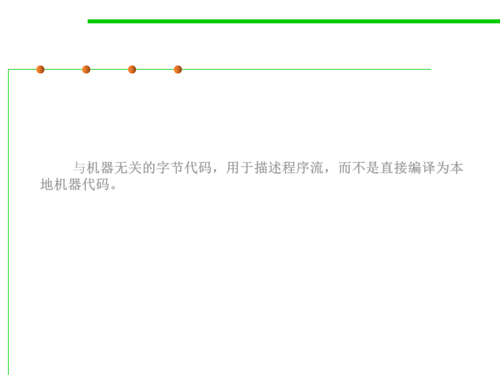
Object files in Java
2.2 Process, Systems, and Tools of Software Construction
▪ The object file format for a Java class is known as a class file and has
the suffix of .class.
▪ Machine-independent byte codes to describe the flow of the
program(程序流) instead of compiling directly into native machine
code.与机器无关的字节代码，用于描述程序流，而不是直接编译为本
地机器代码。
▪ A Java Virtual Machine (JVM) is required to load and interpret these
byte codes, although the JVM likely first translates them into native
machine code before actually executing the program.
▪ Use javac command to translate Java source files into class files.

2.2 Process, Systems, and Tools of Software Construction
Executable Programs of Java
▪ Java programming is dynamic class loading. No build-time link step
is required to produce an executable program. Instead, Java classes
are individually loaded into memory when a running program needs
them. There’s no single executable program image to be loaded. Java
语言是动态进行类的加载，在运行时根据需要，类会被加载入内存。
▪ Java programs are simply a collection of dynamic libraries,
although individual classes are loaded one at a time instead of as
part of much larger shared libraries.
▪ A Java program requires two things to execute:
– The JVM must be provided with the name of a class that contains a main
method. This is used as the starting point for execution.
– The JVM must also be provided with a class path, which is used to
identify where additional classes can be located.
2.2 Process, Systems, and Tools of Software Construction
Executable Programs of Java
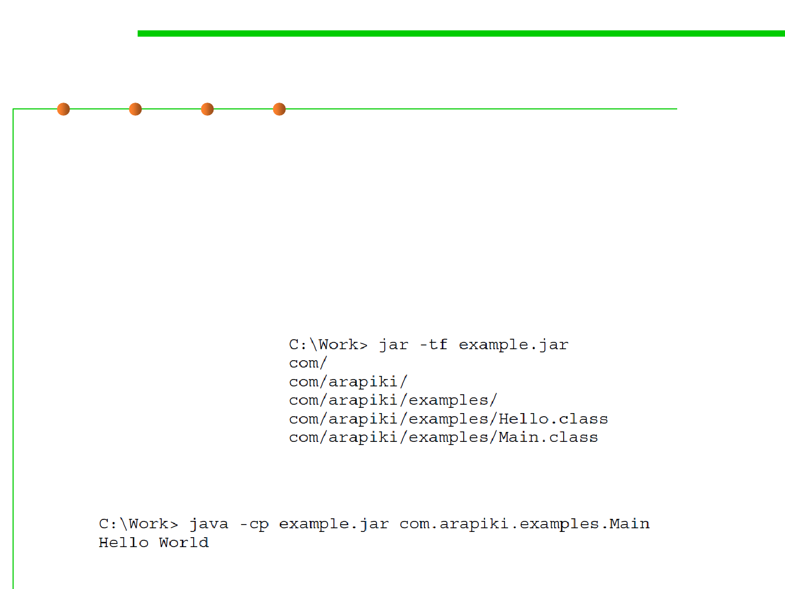
Libraries in Java
2.2 Process, Systems, and Tools of Software Construction
▪ In addition to specifying a list of directories in which .class files can
be found, Java classes can be placed into larger archive files, known
as JAR files.
▪ Most Java applications prefer the JAR file format (with a .jar suffix),
simply because it’s easier to manipulate JAR files than package and
distribute a large number of .class files.
▪ To create a JAR file:
▪ To use a JAR file:

Libraries in Java
2.2 Process, Systems, and Tools of Software Construction
▪ JAR file is commonly used as a means of distributing programs. Not
only do you package your own software in JAR files, but you can
incorporate third-party packages by obtaining other people’s JAR
files and adding them to your own class path.
▪ Because of the dynamic loading system, you can replace and
upgrade JAR files whenever you want.由于动态加载的特性，可以随
时替换和升级JAR文件（需要确保兼容性）。

Software Construction
(5) Subtargets and Build Variants


Ways of build
2.2 Process, Systems, and Tools of Software Construction
▪ Is there only one way each source file is compiled and linked into an
executable program and that only one type of release package can be
generated?
▪ In reality, though, any number of variants can exist, each using a
slightly modified build process and creating a slightly different
release package.可以存在任意数量的构建方式，每个方式都使用稍微
修改的构建过程并创建一个稍微不同的发布包。
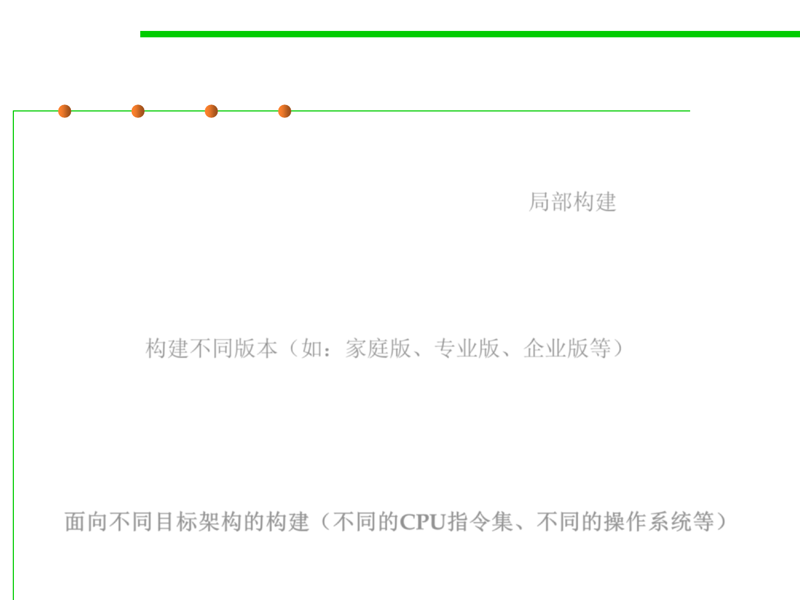
2.2 Process, Systems, and Tools of Software Construction
Three different ways of build
▪ Building subtargets: Developers who are making only incremental
changes to one part of the build tree prefer to rebuild only the
portion of the tree they’re actively working on. 局部构建
▪ Building different editions of the software: The output is
customized to vary the software’s behavior. These variations might
include support for natural languages or support for different
combinations of product features, such as a Home or Professional
edition. 构建不同版本（如：家庭版、专业版、企业版等）
▪ Building different target architectures: To support a software
product on different target machines, you must compile the same set
of source files for a variety of different CPU types and operating
systems. This includes CPUs such as x86, MIPS, and PowerPC, as
well as operating systems such as Linux, Windows, and Mac OS X.
面向不同目标架构的构建（不同的CPU指令集、不同的操作系统等）

2.2 Process, Systems, and Tools of Software Construction
Building subtargets
▪ Any large piece of software can be divided into a number
of subcomponents, often in the form of a static or dynamic
library. Each component provides only a portion of the
program’s full functionality and is developed somewhat
independently from other components.
▪ To avoid time-consuming in building the entire source tree to create
the final executable program, it’s better to choose to limit the
number of subcomponents they build instead of always rebuilding
the whole source tree. 避免耗时的完全构建，限制构建涉及的某块数
量
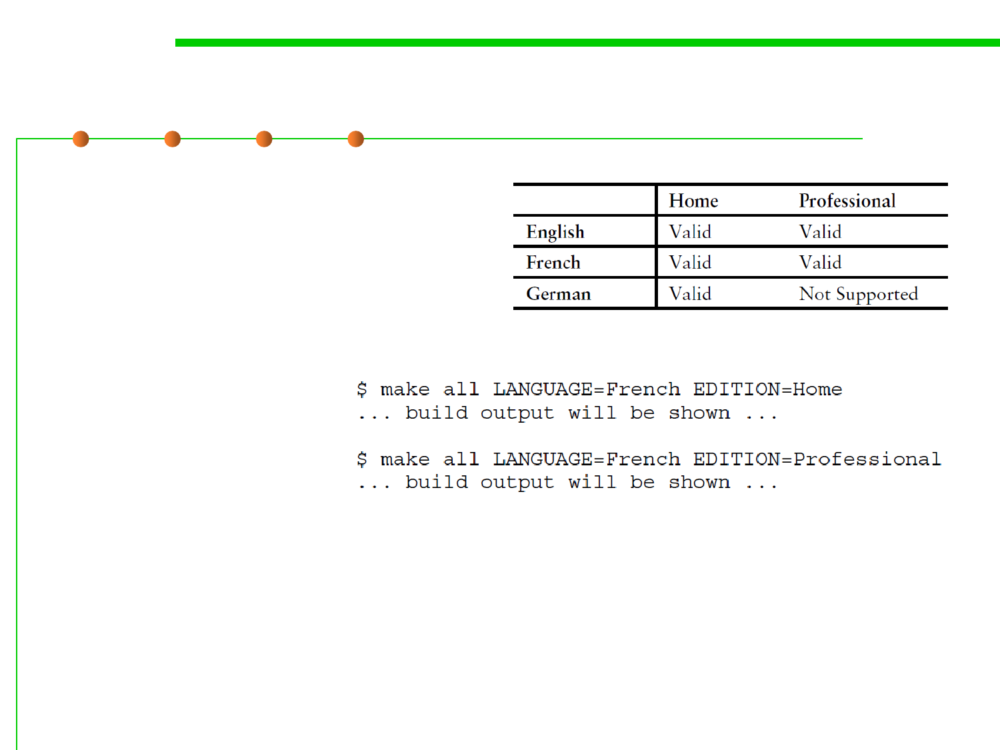
2.2 Process, Systems, and Tools of Software Construction
Building Different Editions of the Software
▪ Building different editions
– Language and culture, localization
– Hardware variations
– Pricing options
▪ Specifying the Build Variant:(例如：语言和版本)
▪ Varying the Code:(对代码的定制调整)
– Line-by-line variation 逐行调整，对代码进行条件编译，根据变量的值，实现不同行为
– Per-variant files 每个变量一个文件，每个变量对应的源代码放到不同文件中，如不同语言针
对不同的功能
– Per-variant directories 每变量一个目录
– Per-variant build description files 每变量一个构造描述文件


2.2 Process, Systems, and Tools of Software Construction
Building Different Target Architectures(针对不同的目标系统)
▪ This type of variant is relevant only when programming in
languages such as C and C++, which compile into native code.
▪ It’s not relevant for Java and C#, which use machine-independent
virtual machines.

Software Construction
(6) The Build Tools

Build tools
▪ For Java:
– Make
– Ant
– Maven
– Gradle
– Eclipse
2.2 Process, Systems, and Tools of Software Construction

Software Construction
Make

Java make
2.2 Process, Systems, and Tools of Software Construction
▪ Use Make and makefile to build Java projects
– https://www.cs.swarthmore.edu/~newhall/unixhelp/howto_makefiles.ht
ml
– https://www.cs.swarthmore.edu/~newhall/unixhelp/javamakefiles.html
– http://www.cnblogs.com/jiqingwu/archive/2012/06/13/java_makefile.ht
ml
▪ Commands:
– # make new
To generate sub-directories (src, bin, res)
– # make build
To compile and generate java classes in bin
– # make clean
Clean the compilation results
– # make rebuild
Clean the compilation results and re-complie
(clean + build)
– # make run
To check the execution results
– # make jar
To generate executable jar files

Software Construction
Apache Ant

Apache Ant
2.2 Process, Systems, and Tools of Software Construction
▪ Ant is a build tool developed by Apache Software Foundation.
▪ Ant follows is to encapsulate each activity in the build system into
a high-level task. Ant遵循的是将构建系统中的每个活动都封装成一
个高级任务。
– ant compile: For compiling all the Java source files into class files
– ant jar: For packaging the class files into a single Jar file
– ant package: For creating a full software release package, complete with a
version number
– ant clean: For removing all generated files from the build tree
– ant javadoc: For generating API documentation using the Javadoc tool
– ant: For executing the default target, which is most likely the same as the
package target
▪ Buildfile: build.xml

2.2 Process, Systems, and Tools of Software Construction
Built-in and optional tasks of Ant
▪ Basic file operations such as mkdir, copy, move, and delete
▪ The creation of file archives using an array of different formats
(such as .tar, .gz, .zip, .jar, and .rpm)
▪ The compilation of Java code, including special tools for RMI and
JSP compilation
▪ The automatic generation of API documentation, using the
Javadoc tool
▪ Direct access to version-control tools such as CVS, Perforce, and
ClearCase
▪ Build lifecycle features, such as updating build version numbers,
sending email messages, and playing sounds to indicate the
completion of the build process
▪ Check complete task list:
http://ant.apache.org/manual/tasksoverview.html

An Ant example
2.2 Process, Systems, and Tools of Software Construction
▪ Detailed help can be found from
http://ant.apache.org/manual/index.html
Apache Ant
2.2 Process, Systems, and Tools of Software Construction
▪ Read Chapter 7 Ant of the textbook “Software Build Systems:
Principles and Experience”.

Software Construction
Apache Maven

Apache Maven
2.2 Process, Systems, and Tools of Software Construction
▪ Apache Maven is a software project management and
comprehension tool.
– Based on the concept of a project object model (POM), Maven can manage
a project's build, reporting and documentation from a central piece of
information.
▪ IDE Integration: Eclipse IDE
▪ Maven’s primary goal is to allow a developer to comprehend the
complete state of a development effort in the shortest period of
time.
– Making the build process easy
– Providing a uniform build system
– Providing quality project information
– Providing guidelines for best practices development
– Allowing transparent migration to new features

Apache Maven
2.2 Process, Systems, and Tools of Software Construction

Apache Maven
2.2 Process, Systems, and Tools of Software Construction
https://maven.apache.org/index.html
▪ validate - validate the project is correct and all necessary
information is available
▪ compile - compile the source code of the project
▪ test - test the compiled source code using a unit testing framework.
These tests should not require the code be packaged or deployed
▪ package - take the compiled code and package it in its distributable
format, such as a JAR.
▪ verify - run any checks on results of integration tests to ensure
quality criteria are met
▪ install - install the package into the local repository, for use as a
dependency in other projects locally
▪ deploy - done in the build environment, copies the final package to
the remote repository for sharing with other developers and projects.
 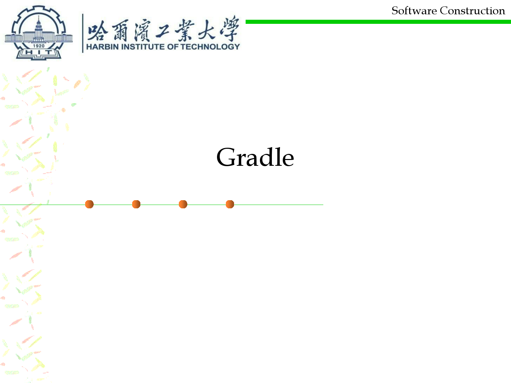
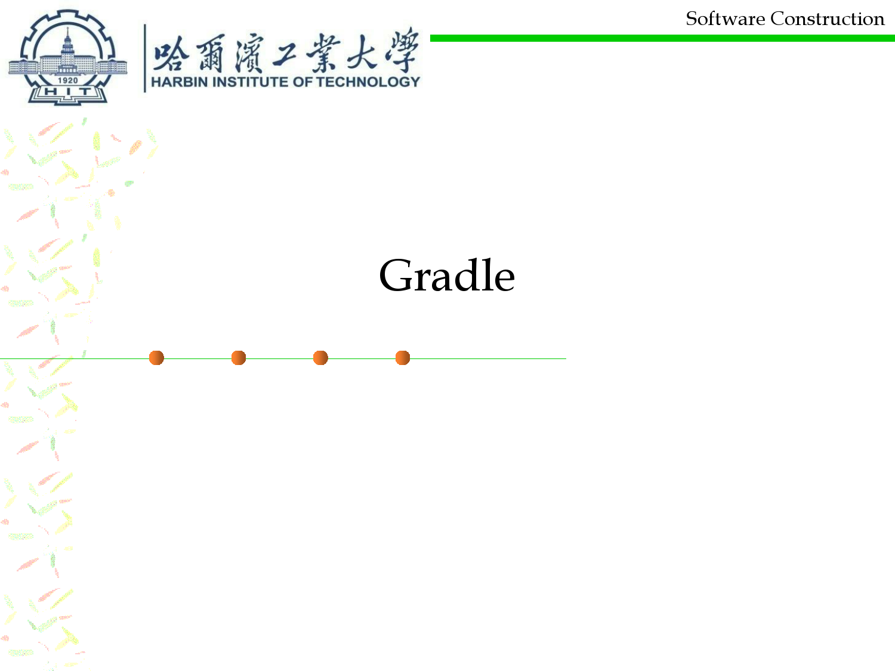
Software Construction
Gradle
Gradle
2.2 Process, Systems, and Tools of Software Construction
▪ Using the Gradle build system in the Eclipse IDE (Tutorial)
http://www.vogella.com/tutorials/EclipseGradle/article.html

Software Construction
Build Java project in Eclipse

2.2 Process, Systems, and Tools of Software Construction
Build Java project in Eclipse
▪ Eclipse IDE provides a complete set of development tools for code
editing, compilation, version control, testing, and tracking of tasks.
▪ The build functionality in Eclipse is just one part of the wider
toolset, the compilation happens behind the scenes, and you don’t
even know it’s taking place, Eclipse GUI makes the build work
together seamlessly.
▪ You don’t write a build description file (such as a makefile): Eclipse
already knows enough about the structure of the software.
▪ Relying on the GUI to provide the build functionality makes
constructing a build system easy but also limits the set of available
features.
▪ Read Chapter 10 Eclipse of the textbook “Software Build Systems:
Principles and Experience”.


Software Construction
Summary

2.2 Process, Systems, and Tools of Software Construction
Summary of this lecture
▪ General process of software construction: Design Programming
/refactoring Debugging Testing Build Release
– Programming / refactoring
– Review and static code analysis
– Debugging (dumping and logging) and Testing
– Dynamic code analysis /profiling
▪ Narrow-sense process of software construction (Build): Validate
Compile Link Test Package Install Deploy
– Build system: components and process
– Build variants and build language
– Build tools: Make, Ant, Maven, Gradle, Eclipse

Software Construction
The end
March 5, 2019